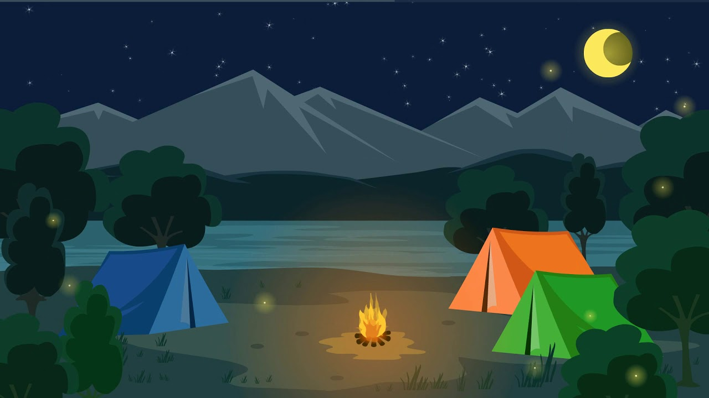
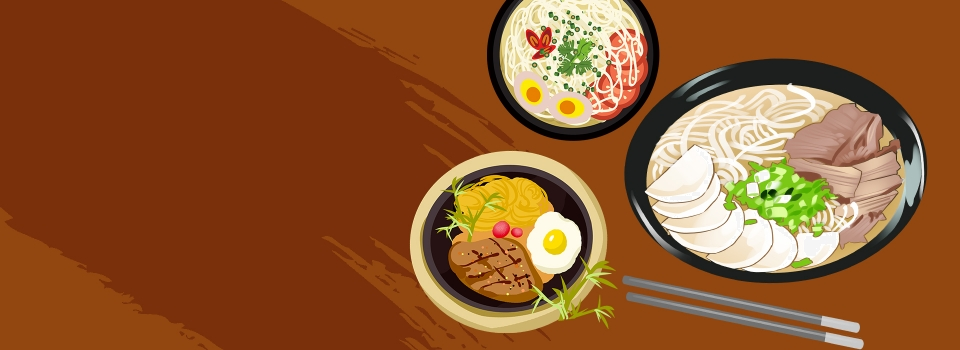
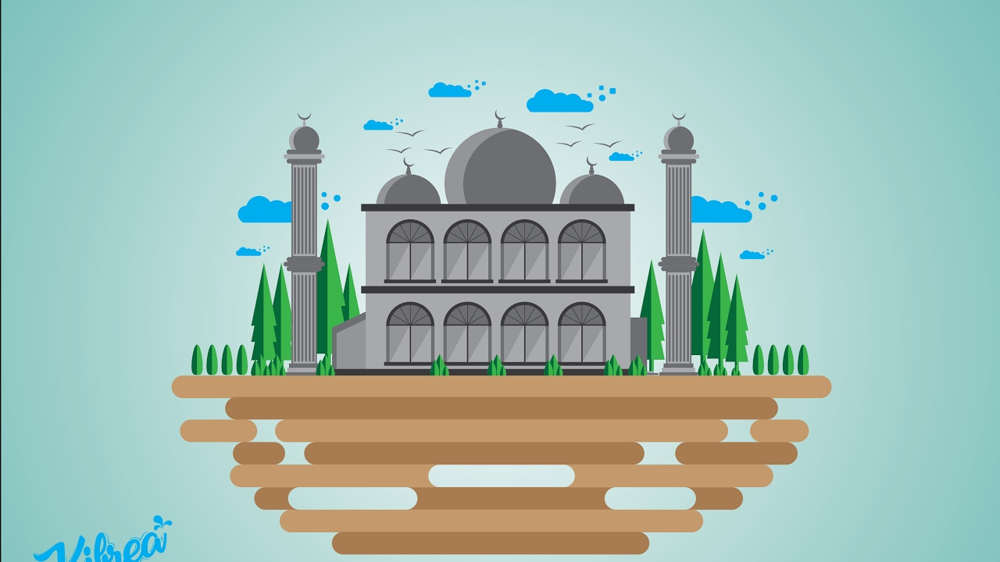

Wisata Alam

Wisata alam adalah bentuk kegiatan rekreasi dan pariwisata yang
memanfaatkan potensi sumberdaya alam, baik dalam keadaan alami
maupun setelah ada usaha budidaya, sehingga memungkinkan wisatawan
memperoleh kesegaran jasmaniah dan rohaniah, men-dapatkan
pengetahuan dan pengalaman serta menumbuhkan inspirasi dan cinta
Wisata kuliner

Wisata kuliner adalah perjalanan yang memanfaatkan masakan serta
suasana lingkungannya sebagai objek tujuan Wisata. Masa perjalanan
yang tergolong dalam definisi wisata adalah tidak kurang dari 24 jam
dan tidak lebih dari tiga bulan, serta tidak dalam rangka mencari
pekerjaan.
Wisata Religi

Wisata religi diartikan sebagai ziarah atau kunjungan seseorang
maupun kelompok ke situs yang penting atau dianggap penting terkait
dengan penyebaran suatu agama. Bentuk situs tersebut bisa
bermacam-macam, mulai dari masjid, candi, arca, perhiasan,
adat-istiadat, bahkan makam tokoh terkemuka.